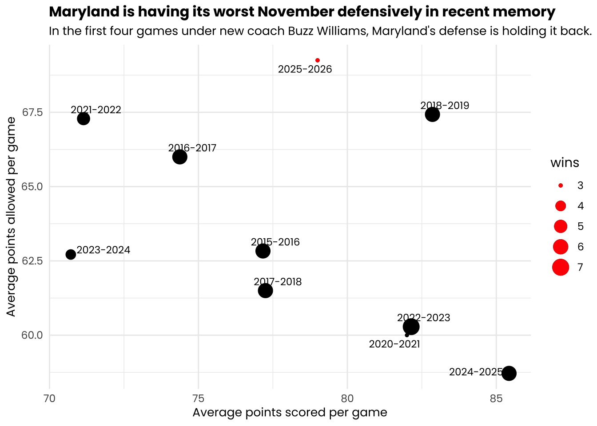
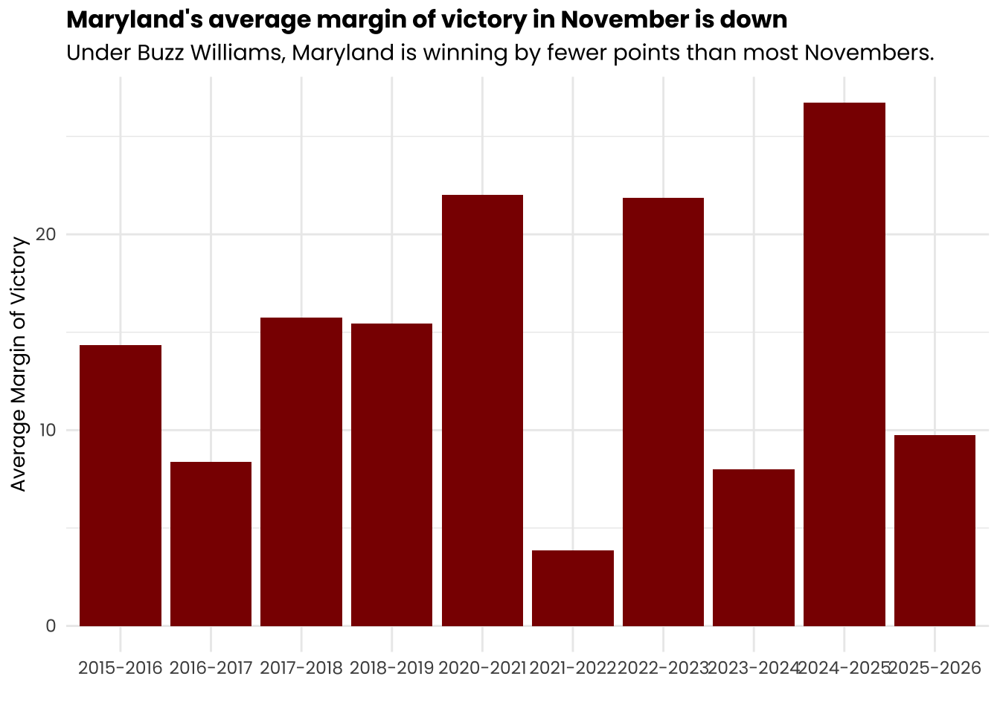
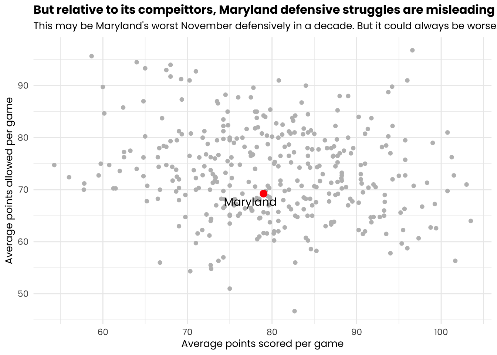
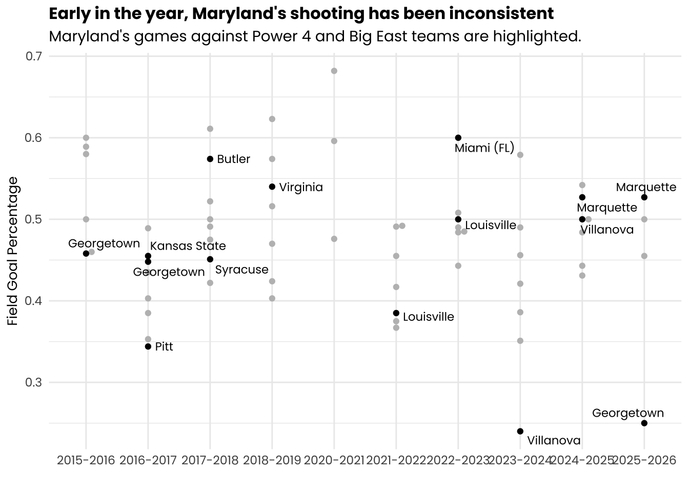

Rows: 111554 Columns: 58
── Column specification ────────────────────────────────────────────────────────
Delimiter: ","
chr (8): Season, Opponent, HomeAway, W_L, URL, Conference, Team, OT
dbl (49): Game, TeamScore, OpponentScore, TeamFG, TeamFGA, TeamFGPCT, Team3...
date (1): Date
ℹ Use `spec()` to retrieve the full column specification for this data.
ℹ Specify the column types or set `show_col_types = FALSE` to quiet this message.
Code
maryland <- logs |>filter(Team =="Maryland") #i used Claude to help with this code. I picked Dec 1 as the cutoff date to just use November games as the early season dataearlyterps <- maryland %>%mutate(season_start_year =as.integer(substr(Season, 1, 4)),dec1_cutoff =ymd(paste0(season_start_year, "-12-1")),game_date =ymd(Date) ) |>filter(game_date < dec1_cutoff) |>select(-season_start_year, -dec1_cutoff, -game_date)
Code
earlyterpssums <- earlyterps |>group_by(Season) |>summarize(games =n(),wins =sum(W_L =="W"),losses =sum(W_L =="L"),points_for =sum(TeamScore),points_against =sum(OpponentScore),TeamFGPCT =mean(TeamFGPCT, na.rm =TRUE),OpponentFGPCT =mean(OpponentFGPCT, na.rm =TRUE), ) |>mutate(point_dif = points_for - points_against,win_pct = wins / games,avg_points_for = points_for / games,avg_points_against = points_against / games ) |>arrange(desc(Season))currentterps <- earlyterpssums |>filter(Season =="2025-2026")ggplot() +geom_point(data = earlyterpssums, aes(x = avg_points_for, y = avg_points_against, size = wins)) +geom_point(data = currentterps, aes(x = avg_points_for, y = avg_points_against, size = wins), color ="red") +geom_text_repel(data = earlyterpssums, aes(x = avg_points_for, y = avg_points_against, label = Season), family ="poppins", size =3) +labs(title ="Maryland is having its worst November defensively in recent memory",subtitle ="In the first four games under new coach Buzz Williams, Maryland's defense is holding it back.",x ="Average points scored per game",y ="Average points allowed per game",) +theme_minimal() +theme(text =element_text(family ="poppins"),plot.title =element_text(size =12, face ="bold"),plot.subtitle =element_text(size =10),axis.title =element_text(size =10) )

Often, coaches say that defense comes along earlier for a team than its offense. That’s because offense typically requires learning more plays and positioning, and it takes players more time to get off the shooting rust from an off season.
But not at Maryland, and not under the first four games of Buzz Williams’ tenure. The Terps are allowing nearly two points more per game than any of its previous Novembers since the 2014-15 season. It’s the worst defensive start to a season in a decade in College Park. Power conference programs often play several cupcakes in November to work on putt the pieces together. It usually wins those games in a blowout.
On average, Maryland isn’t doing that either so far.
Code
earlyterps |>mutate(point_dif = TeamScore - OpponentScore ) |>group_by(Season) |>summarize(avg_point_dif =mean(point_dif) ) |>ggplot() +geom_col(aes(x=Season, y=avg_point_dif), fill="darkred") +labs(title ="Maryland's average margin of victory in November is down",subtitle ="Under Buzz Williams, Maryland is winning by fewer points than most Novembers.",x ="",y ="Average Margin of Victory" ) +theme_minimal() +theme(text =element_text(family ="poppins"),plot.title =element_text(size =12, face ="bold"),axis.title =element_text(size =10) )

Relative to other November performances, Maryland isn’t reaching a double-digit margin of victory. Maryland lost by 10 at home to Georgetown, won a close game against Marquette and while it had more comfortable margins against Alcorn State and Coppin State neither game was as much of a blowout as previous Maryland teams have reached — especially as Maryland’s defense allowed more than 60 points to both Alcorn and Coppin State, No. 344 and No. 364 in KenPom respectively.
Yet, Maryland’s defensive rating according to KenPom is in the top 20 nationally. While it’s been a poor performance for Maryland relative to previous Novembers, Maryland has stood up fairly well relative to its competitors.
Code
sumlogs <- logs |>filter(Season =="2025-2026") |>group_by(Team) |>summarize(games =n(),wins =sum(W_L =="W"),losses =sum(W_L =="L"),points_for =sum(TeamScore),points_against =sum(OpponentScore),TeamFGPCT =mean(TeamFGPCT, na.rm =TRUE),OpponentFGPCT =mean(OpponentFGPCT, na.rm =TRUE), ) |>mutate(point_dif = points_for - points_against,win_pct = wins / games,avg_points_for = points_for / games,avg_points_against = points_against / games ) ggplot() +geom_point(data = sumlogs, aes(x = avg_points_for, y = avg_points_against), color ="gray") +geom_point(data = sumlogs |>filter(Team =="Maryland"), aes(x = avg_points_for, y = avg_points_against), color ="red", size =3) +geom_text_repel(data = sumlogs |>filter(Team =="Maryland"), aes(x = avg_points_for, y = avg_points_against, label = Team), family ="poppins", size =4) +labs(title ="But relative to its compeittors, Maryland defensive struggles are misleading",subtitle ="This may be Maryland's worst November defensively in a decade. But it could always be worse.",x ="Average points scored per game",y ="Average points allowed per game",) +theme_minimal() +theme(text =element_text(family ="poppins"),plot.title =element_text(size =12, face ="bold"),plot.subtitle =element_text(size =10),axis.title =element_text(size =10),legend.position ="none" )

In other words, it could always be worse!
Maryland may be taking a step back relative to its own standards, but it’s still been pretty solid overall this year. Whether Maryland’s internal stats comparison has to do with a new coach is unclear, but most teams in the country are struggling more than Maryland.
Yet while a change in coach can lead to Maryland have a notable change in it’s defensive performance, Maryland’s shooting as a team has been inconsistent over the last decade no matter who was on the sideline. It is hard to maintain offensive consistency early in a season as a team learns to gel together. Maryland’s team shooting percentages have been a bit all over the place.
Code
top_opps <-c("Villanova", "Marquette", "Butler", "Georgetown", "Virginia", "Pitt", "Louisville", "Kansas State", "Syracuse", "Miami (FL)")goodprograms <- earlyterps |>mutate(Power4_BigEast = Opponent %in% top_opps) |>filter(Power4_BigEast ==TRUE)goodwins <- goodprograms |>filter(W_L =="W")ggplot() +geom_beeswarm(data=earlyterps, aes(x=Season, y=TeamFGPCT), color="grey") +geom_beeswarm(data=goodprograms, aes(x=Season, y=TeamFGPCT), color="black") +geom_text_repel(data=goodprograms, aes(x=Season, y=TeamFGPCT, label=Opponent), size=3, nudge_x =0.2, family ="poppins") +labs(title ="Early in the year, Maryland's shooting has been inconsistent",subtitle ="Maryland's games against Power 4 and Big East teams are highlighted.",x ="",y ="Field Goal Percentage" ) +theme_minimal() +theme(text =element_text(family ="poppins"),plot.title =element_text(size =12, face ="bold"),axis.title =element_text(size =10) )

As Maryland tries to figure out how to run its offense and get a shooting grove going early in the year, it’s understandably experienced a lot of highs and lows. This year, Maryland’s home loss to Georgetown served as one of the lowest lows. Maryland has variable in both its games against major conference opponents and the Big East as well as its games against cupcake teams.
Maryland’s 18-point 2022 win over Miami (FL) was arguably its best November shooting performance considering quality of opponent. Maryland reached 60% shooting as a team in that win. On the other end is shooting 24% and managing just 40 points in a 2023 loss to Villanova. That was then-future and now-current Villanova Head Coach Kevin Willard’s first year at Maryland.
There is not clear predictor of how the rest of a season will go based on Maryland’s early season shooting. The best mark may be looking at where Maryland bottomed out.
Maryland shot better than 40% as a team in ever November game during the 2015-16, 2017-18, 2018-19, 2020-21, 2022-23 and 2024-25 seasons. It went on to make the NCAA Tournament in all but one of those seasons. In the 2016-17, 2021-22 and 2023-24 seasons, Maryland had three games each shooting below 40% in November. Only the 2016-17 team made the NCAA Tournament, and lost in the first round to Xavier. The data does not include Maryland’s 2019-20 team, which was arguably its best team in this time span. But Maryland did shoot above 40% every November game that year and was on track for a strong NCAA Tournament seed before the onset of the COVID-19 pandemic.